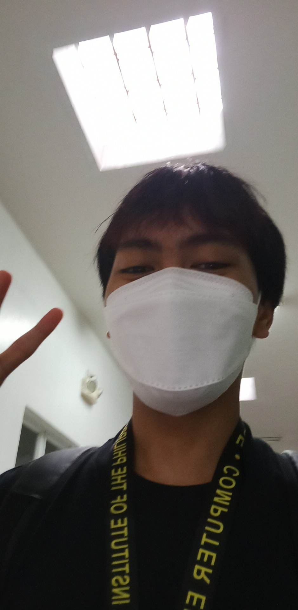

Information about me and my reflection:
Note: You can easily navigate other pages (Hands-On Activities and Examination) by using the menu option in the upper right corner of this page.
About me:
- Name: Deo M. Bolivar.
- Age: 20 years old.
- Address: 205 E. Rodriguez Sr. Ave. Quezon City Barangay: Damayang Lagi Block 5
- I am currently a 3rd year college student at Technological Institute of the Philippines Quezon City taking a Bachelor of Science in Computer Engineering (BSCpE).
- My contact information:
- My phone number: 09082158812
- My school email account: qdmbolivar@tip.edu.ph
- My personal email account: deobolivar415@gmail.com
My Reflection and Learnings:
My overall reflection and learnings from this course include learning how to use Ubuntu, a free and open-source operating system based on the Linux kernel, for the preliminary term. I also learned how to use CentOS, a Linux operating system that is free and open source. During the preliminary term, I learned how to use the Oracle VM Virtualbox to create virtual machines on Ubuntu and how to use git. Furthermore, I learned how to use git to implement SSH Key-based Authentication. In addition, I learned how to install the SSH server on CentOS and how to use and implement ansible, as well as how to implement roles using ansible playbooks.
My midterm reflection and learnings are as follows: I learned how to implement the targeting Specific nodes by grouping the remote servers, because grouping the servers is necessary to make custom changes to certain required configurations. Because the remote servers have the same configuration and are in the same group, we can easily debug and make changes. I also learned how to use ansible to manage files and create roles. Finally, I discovered how to install, configure, and manage log monitoring tools.
My final reflections and learnings are that I learned how to configure and manage containerized environments using docker as container technology, as well as how to build an app within the containers. I also learned how to install some OpenStack services such as keystone, glance, Nova, Neutron, Horizon, and Cinder, as well as the differences between these services. Finally, I'd like to thank Engr. Jonathan V. Taylar, thank you for your understanding and patience, as well as your willingness to go above and beyond to help me succeed. You have always been there for me, and I am truly grateful for all of your assistance and guidance, as well as for assisting me in gaining a better understanding of this subject. Thank you very much.